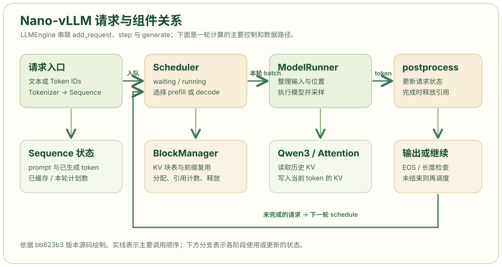

Nano-vLLM 是一个体量较小的语言模型推理引擎实现。本系列以 Nano-vLLM 提交 bb823b3 为阅读基准，沿着一次请求的运行路径理解请求状态、调度、KV Cache 和模型执行。第一章建立组件关系；第二章与第三章分别阅读 llm_engine.py 和 sequence.py 的完整注释代码。
项目定位与阅读范围
语言模型给定 token 序列，计算下一个 token 的得分；推理引擎还要管理多个请求：何时把请求送进模型、哪些请求共用一次计算、已计算的注意力状态保存在哪里，以及请求结束后怎样释放资源。Nano-vLLM 在一个较小的代码库里展示这些职责，并使用 Qwen3 模型、前缀缓存、张量并行和 CUDA Graph 等实现。项目 README
当前对外的 LLM.generate() 是离线批量接口：它先将本次调用传入的所有 prompt 加入等待队列，再循环执行，最后一次性返回结果。它适合学习批处理和吞吐；若要研究错峰到达请求的首 token 延迟，还需要另写到达时间回放和逐请求事件记录。LLMEngine.generate() 源码
组件思维导图

图是依据本系列所读版本绘制的结构示意。横向箭头表示一次计算的主要数据流；下方分支标出调度器使用的 KV 块管理，以及模型执行器使用的 Qwen3、Attention 和 GPU KV 张量。生成一个 token 后，请求若尚未结束，会回到下一轮调度，而不是重新创建模型。
这条路径可按一次请求展开：
LLMEngine.add_request()将文本分词，创建Sequence，放进调度器的waiting队列。调用者若已经提供 token ID 列表，就跳过分词。入口源码Scheduler.schedule()选择本轮要运行的请求，决定是处理 prompt 的 prefill，还是让运行中请求继续生成的 decode。它通过BlockManager查询、分配和释放 KV 块。调度器源码ModelRunner.run()按本轮阶段准备 token、位置和 KV 映射，调用 Qwen3 前向计算并采样一个 token。KV Cache 保存注意力层已经算出的 Key 和 Value，后续 decode 能读取历史状态。执行器源码Scheduler.postprocess()把采样结果追加到请求，检查结束条件；完成的请求解除对 KV 块的引用，未完成的请求继续参加后续轮次。后处理源码
关键状态与模块边界
| 对象 | 保存或处理的内容 | 阅读时关注的接口 |
|---|---|---|
LLMEngine |
分词器、执行器和调度器；驱动生成循环 | add_request()、step()、generate() |
Sequence |
一个请求的 prompt、生成 token、状态和块表 | num_tokens、num_cached_tokens、append_token() |
Scheduler |
等待与运行队列；决定本轮 batch | schedule()、postprocess() |
BlockManager |
物理 KV 块编号、前缀哈希和引用计数 | can_allocate()、allocate()、deallocate() |
ModelRunner |
模型权重、GPU KV 张量、本轮输入整理与采样 | prepare_prefill()、prepare_decode()、run() |
Sequence 的三个计数需要分开：num_tokens 是当前序列中的 token 总数；num_cached_tokens 是已经完成模型计算、其 KV 可供后续使用的 token 数；num_scheduled_tokens 是本轮计划计算的 token 数。举例说，prompt [A,B,C] 完成 prefill 并采样出 D 后，序列已有 4 个 token，但只有前 3 个完成了 KV 计算；下一轮 decode 才把 D 当作模型输入。Sequence 源码
源码阅读顺序
阅读顺序按对象依赖安排，而非按目录字母顺序。每一步都能回答一个具体问题，再进入下一步。
example.py和llm_engine.py：找到对外入口、请求何时入队，以及一次step()的调用顺序。下一章详细解释这一段。sequence.py：确认请求状态怎样随 prefill、decode 和完成而变化；本站第 3 章给出完整注释代码。scheduler.py与block_manager.py：解释本轮选择和 KV 资源约束。以调度优化为目标时，这是最先需要读透的两份文件。model_runner.py：追踪选中的请求怎样变成 GPU 输入，以及块编号怎样变成 Attention 可读的映射。context.py、attention.py和qwen3.py：理解本轮元数据、KV 写入和模型前向。初读时先看输入输出，随后再追具体算子。bench.py：核对现有基准的请求分布和计时范围，再设计自己需要的在线负载。
本系列的验证边界
本文解释的是指定提交中的代码路径。图中的模块关系和上面的 [A,B,C] → D 算例用于理解实现，并非性能实测结果。完成前两篇代码解析后，可以用两个短请求手工记录每轮的 waiting、running、num_cached_tokens 和 is_prefill；这些状态比只看最终生成文本更能检验自己是否理解了引擎。